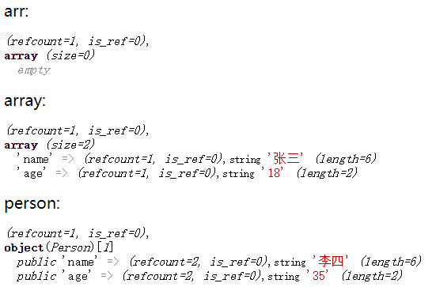
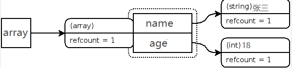
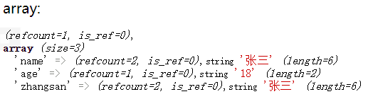
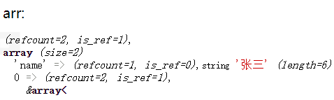
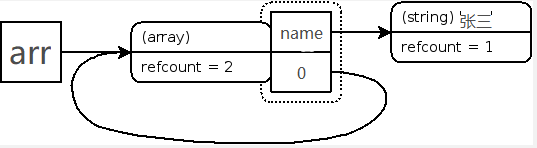
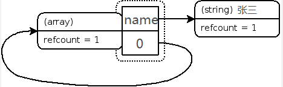
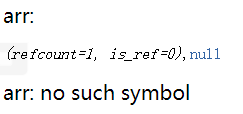

php的垃圾回收机制(GC)是在PHP5之后出现的，而在PHP5.3版本之前使用的都是“引用计数”的方式。实现引用计数的实质就是在每个内存对象中都有一个计数器，当内存对象被变量引用时，计数器+1，当变量取消或更改引用内存时，计数器-1，直到计数器中的值为0时，说明该内存对象没有被变量引用，，就产生了一个无意义的内存对象。php就会销毁释放内存，进行垃圾回收。
每个变量被赋值时就会生成叫‘zval’的变量容器，‘zavl’容器中除了包含变量名，变量的类型和变量的值以外，还包含两个字节的额外信息。第一个是"is_ref"，是个布尔值，用来表示该变量是否被引用，php就是根据这个判断变量是否是普通类型还是引用类型；另一个是‘refcount’，功能类似于计数器，记录指向该变量容器的变量个数。
1，生成并显示一个新的zval容器
$a;
xdebug_debug_zval('a');//a: no such symbo
$b="new string";
xdebug_debug_zval('b');//b: (refcount=1, is_ref=0),可以看到：变量赋值后生成的‘zavl’容器中的参数。其中refcount=1表示一个变量指向该变量容器。
2，添加一个‘zavl’的引用计数
$b="new string";
xdebug_debug_zval('b');
$c=$b;
xdebug_debug_zval('b');//b: (refcount=2, is_ref=0),string 'new string' (length=10)
$d="new string";
xdebug_debug_zval('d');//d: (refcount=1, is_ref=0),这时，引用次数是2，因为同一个变量容器被变量b和变量c关联。当将一个变量赋值给另一个变量时，php不会去复制已生成的变量容器。而将一个值赋值给一个变量时，会重新生成一个新的‘zavl’容器。
3，清空并删除一个引用计数
$b="new string";
$c=$b;
unset($b);
xdebug_debug_zval('c');//c:(refcount=1, is_ref=0),string 'new string' (length=10)
unset($c);
xdebug_debug_zval('c');//c: no such symbol当任何关联到某个变量容器的变量离开它的作用域(比如：函数执行结束)，或者对变量调用了函数 unset()时，”refcount“就会减1。当refcount=0时，包含类型和值的这个变量容器就会从内存中删除。
上面的数据类型都是标量数据类型，而复合数据类型（array，object）又有不同。
4，生成一个复合数据的变量容器
$arr=[];
xdebug_debug_zval('arr');
$array=['name'=>'张三','age'=>'18'];
xdebug_debug_zval('array');结果如下：

图示：

可以看到：数组分配了三个zval容器：array name age
5，添加一个已经存在的元素到数组中
$array = [
'name' => '张三',
'age' => '18'
];
$array['zhangsan'] = $array['name'];
xdebug_debug_zval('array');
6，销毁包含数组名信息的'zavl'变量容器
$array = [
'name' => '张三',
'age' => '18'
];
$array['zhangsan'] = $array['name'];
unset($array);
xdebug_debug_zval('array');其结果如下
删除数组中的一个元素，就是类似于从作用域中删除一个变量. 删除后,数组中的这个元素所在的容器的“refcount”值减少，同样，当“refcount”为0时，这个变量容器就从内存中被删除。
一般来说，'zavl'容器中的refcount=0时，该变量容器就是垃圾，会被php引擎销毁。但是有一种情况：'zavl'容器中的refcount不为0，却没有变量指向它，仍然是个垃圾。
环状引用就是一个例子，即把数组作为一个元素添加到自己。
7，生成一个包含环状引用的‘zavl’容器
$arr = [
'name' => '张三'
];
$arr[] = &$arr;
xdebug_debug_zval('arr');结果如下

图示：

8，删除环状引用
$arr = [
'张三'
];
$arr[] = &$arr;
unset($arr);
xdebug_debug_zval('arr');图示：

现在，虽然没有任何变量指向该‘zavl’,但由于数组元素“0”仍然指向数组本身，所以该‘zavl’不能被清除 。而又因为没有另外的变量指向它，用户没有办法清除这个结构，结果就会导致内存泄漏。庆幸的是，php脚本运行完毕后会清除这个数据结构。但是在php清除之前，将耗费不少空间的内存。而在一般情况下，php脚本运行完毕因此环状引用内存泄露的问题一般只影响长时间运行的程序脚本。并且在5.3版本后垃圾处理虽然其基础仍然是引用计数，但是做了一些改良，能够将环状引用导致的内存泄露控制在一定的规模以内。
当然，我们也可以手动的清除环状结构
9，手动清除环状引用
$arr = [
'张三'
];
$arr[] = &$arr;
$arr = null;
xdebug_debug_zval('arr');
unset($arr);
xdebug_debug_zval('arr');结果如下

$arr=null后,虽然变量容器‘zavl’还存在，但是之前储存在内存中引用传递的值却是完全删除掉了,最后再使用unset($arr)就可以断开变量名arr和null值之间的联系，令refcount=0就能够释放到内存了。